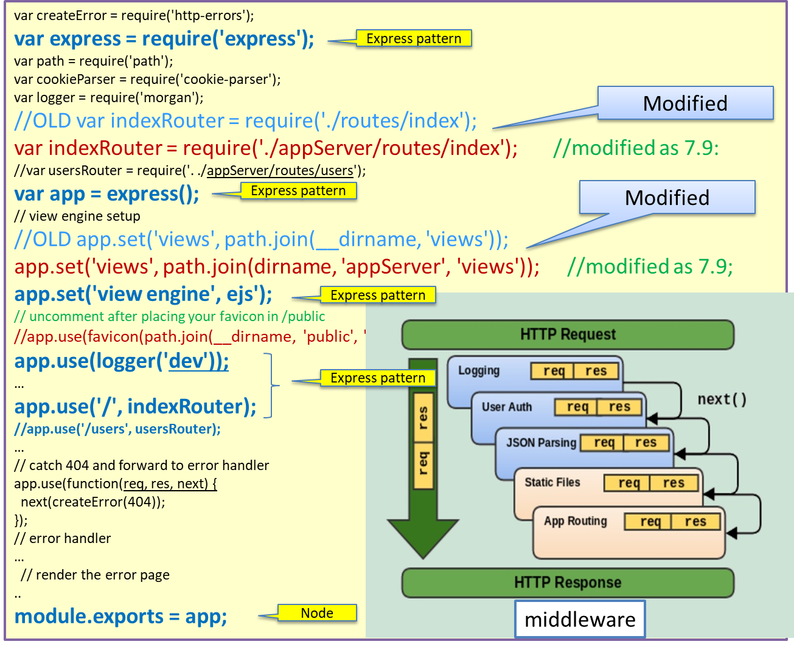

72939 - LAB13 | A frontend in Node.js
LabISS-lectures site
Overview
The goal of this section is to design and build a front-end application component by using
Node.js
and
Express.
From Lamp to Mean
LAMP is an archetypal model of web service stacks, named as an acronym of the names of its original
four open-source components: the GNU/
Linux operating system, the
Apache HTTP Server,
the
MySQL relational database management system (RDBMS), and the
PHP programming language.
MEAN is a free and open-source JavaScript software stack for building dynamic web sites and web applications.
The MEAN stack is
MongoDB,
Express.js,
AngularJS (or Angular), and
Node.js.
Because all components of the
MEAN stack support programs are written in JavaScript,
MEAN applications can be written in one language for both server-side and client-side execution environments.
Node architecture
IO operations can be orders of magnitude slower than data processing.
Reading just one kilobyte of data would take 1.4 microseconds (read speed of 200-730 MB/s),
but during this time a CPU clocked at 2GHz could have performed 28000 of instruction-processing cycles.
- Starting
- Refactoring according to the MVC pattern
- Define the code of the server
- Interacting with the application
- Notes about configuration
Starting
Read section 7.8 of
nodeExpressWeb.pdf and execute the following steps:
- Execute npm install -g express-generator.
- In project it.unibo.frontend19, create the folder nodeCode/frontend and open a terminal in this folder.
- Execute express
- Execute npm install
- Execute node bin/www and open a browser on http://localhost:3000/.

|
We recall that:
- Middleware. In contrast to vanilla Node, where your requests flow through only one function, Express has a
middleware stack (compatible with connect middleware) , which is effectively an array of functions.
- Routing. Routing is a lot like middleware, but the functions are called only when you visit a specific URL with
a specific HTTP method.
- Extensions to request and response objects. Express extends the request and response objects with extra
methods and properties for developer convenience.
- Views. Views allow you to dynamically render HTML.
|
- The code in the generated file bin/www (see nodeCode/frontend/bin/www)
creates a httpServer and passes app as the handler.
- The file app.js (see appOriginal.js) defines
the application logic of the server and is structured according to the Express
pattern introduced in nodeExpressWeb.pdf section 7.8
- To understand the work of the server during the rendering phase, read sections 7.5, 7.6, 7.7 of
nodeExpressWeb.pdf.
Refactoring according to the MVC pattern
Read section 7.9 of
nodeExpressWeb.pdf and execute the steps 1-3:
- Create a new folder called appServer.
- In appServer create two new folders, called models and controllers.
- Move the views and routes folders from the root of the application into the appServer folder.
Now modify the
app.js to keep into account the modifications:

Execute node bin/www: all goes as before.
|
Express has mainly two kind of apis: middleware and routing.
Middleware
The middleware functions will be executed in the order they are called.
Middleware layers can be added one by one in multiple invocations of use.
The next() function pass the request to the next middleware, it form a chain until the request is handled.
See Express middleware.
Routing
The routing api includes
app.METHOD() and
app.route().METHOD(), METHOD can be any HTTP method.
It is used to assign a handler functions for specific request url path and HTTP method.
|
Define the code of the server
Let us now:
- Execute npm install --save ejs in order to use the EJS (now replaced by done.js) rendering engine instead of Jade (also named Pug).
- Execute npm install --save mqtt
- Execute npm install --save socket.io
- Move the code of the server from bin/www into a user-defined file frontend/frontendServer.js
(see frontendServer.js).
- Define the application code of the server in a new file frontend/frontendServer.js
(see applCode.js).
Define the structure of the HTML page
In our implementation of the web-server, we use the
ejs template engine to generate HTML pages
with plain JavaScript.
For an example:
|
|
See the code: index.ejs
Robot command page: Head
The page loaded on the client makes use of the socket.io
support to receive from the server update messages related to the current state of the system.
|
|
|
Robot command page: Body
The page provides an input section (for the user commands) and an output section (the system-state display area).
|
|
|
Application page
The page provides the input/output sections for a robot application).
The code: indexAppl.ejs
|
Interacting with the application
In our implementation of the web-server, we introduce (in applCode.js)
a function named
delegate, whose task is to sends commands to the application logic. Since in our case
the application logic is described as a qak model, we define at the moment the following actions:
publishEmitUserCmd
| Publish (via MQTT) the qak event userCmd on the topic unibo/qak/events
var publishEmitUserCmd = function( cmd ){
var eventstr = "msg(userCmd,event,js,none,userCmd("+cmd +"),1)" ;
mqttUtils.publish( eventstr, "unibo/qak/events" );
}
|
publishMsgToRobotmind

|
Publish (via MQTT) the qak dispatch robotCmd
on the topic unibo/qak/robotmind
var publishMsgToRobotmind = function( cmd ){
var msgstr = "msg(robotCmd,dispatch,js,
robotmind,robotCmd("+cmd +"),1)" ;
mqttUtils.publish( msgstr, "unibo/qak/robotmind" );
}
|
publishMsgToResourceModel

|
Publish (via MQTT) the qak dispatch modelChange
on the topic unibo/qak/resourcemodel
var publishMsgToResourceModel = function( target, cmd ){
var msgstr = "msg(modelChange,dispatch,js,resourcemodel,
modelChange("+target+", "+cmd +"),1)" ;
console.log("publishMsgToResourceModel forward> "+ msgstr);
mqttUtils.publish( msgstr, "unibo/qak/resourcemodel" );
}
For the resource model see
Lab14.html - Machine-to-machine interaction
|
Notes about configuration